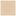
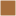
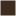

<!doctype html>
<html lang="en">
    <head>
        <meta charset="utf-8">
        <meta http-equiv="X-UA-Compatible" content="IE=edge">
        <meta name="viewport" content="initial-scale=1,user-scalable=no,maximum-scale=1,width=device-width">
        <meta name="mobile-web-app-capable" content="yes">
        <meta name="apple-mobile-web-app-capable" content="yes">
        <link rel="stylesheet" href="css/leaflet.css">
        <link rel="stylesheet" href="css/L.Control.Layers.Tree.css">
        <link rel="stylesheet" href="css/qgis2web.css">
        <link rel="stylesheet" href="css/fontawesome-all.min.css">
        <style>
        html, body, #map {
            width: 100%;
            height: 100%;
            padding: 0;
            margin: 0;
        }
        </style>
        <title>Flying squirrel observations in Uusimaa region</title>
    </head>
    <body>
        <div id="map">
        </div>
        <script src="js/qgis2web_expressions.js"></script>
        <script src="js/leaflet.js"></script>
        <script src="js/L.Control.Layers.Tree.min.js"></script>
        <script src="js/leaflet.rotatedMarker.js"></script>
        <script src="js/leaflet.pattern.js"></script>
        <script src="js/leaflet-hash.js"></script>
        <script src="js/Autolinker.min.js"></script>
        <script src="js/rbush.min.js"></script>
        <script src="js/labelgun.min.js"></script>
        <script src="js/labels.js"></script>
        <script src="js/proj4.js"></script>
        <script src="js/proj4leaflet.js"></script>
        <script src="data/Municipality_1.js"></script>
        <script src="data/Observationshexbin_2.js"></script>
        <script>
        var highlightLayer;
        function highlightFeature(e) {
            highlightLayer = e.target;
            highlightLayer.openPopup();
        }
        var crs = new L.Proj.CRS('EPSG:3067', '+proj=utm +zone=35 +ellps=GRS80 +towgs84=0,0,0,0,0,0,0 +units=m +no_defs', {
            resolutions: [2800, 1400, 700, 350, 175, 84, 42, 21, 11.2, 5.6, 2.8, 1.4, 0.7, 0.35, 0.14, 0.07],
        });
        var map = L.map('map', {
            crs: crs,
            continuousWorld: false,
            worldCopyJump: false, 
            zoomControl:false, maxZoom:28, minZoom:1
        }).fitBounds([[59.28325574952047,22.362804803309505],[61.23111605514499,27.48372261163385]]);
        var hash = new L.Hash(map);
        map.attributionControl.setPrefix('<a href="https://github.com/tomchadwin/qgis2web" target="_blank">qgis2web</a> &middot; <a href="https://leafletjs.com" title="A JS library for interactive maps">Leaflet</a> &middot; <a href="https://qgis.org">QGIS</a>');
        var autolinker = new Autolinker({truncate: {length: 30, location: 'smart'}});
        // remove popup's row if "visible-with-data"
        function removeEmptyRowsFromPopupContent(content, feature) {
         var tempDiv = document.createElement('div');
         tempDiv.innerHTML = content;
         var rows = tempDiv.querySelectorAll('tr');
         for (var i = 0; i < rows.length; i++) {
             var td = rows[i].querySelector('td.visible-with-data');
             var key = td ? td.id : '';
             if (td && td.classList.contains('visible-with-data') && feature.properties[key] == null) {
                 rows[i].parentNode.removeChild(rows[i]);
             }
         }
         return tempDiv.innerHTML;
        }
        // add class to format popup if it contains media
		function addClassToPopupIfMedia(content, popup) {
			var tempDiv = document.createElement('div');
			tempDiv.innerHTML = content;
			if (tempDiv.querySelector('td img')) {
				popup._contentNode.classList.add('media');
					// Delay to force the redraw
					setTimeout(function() {
						popup.update();
					}, 10);
			} else {
				popup._contentNode.classList.remove('media');
			}
		}
        var title = new L.Control({'position':'topright'});
        title.onAdd = function (map) {
            this._div = L.DomUtil.create('div', 'info');
            this.update();
            return this._div;
        };
        title.update = function () {
            this._div.innerHTML = '<h2>Flying squirrel observations in Uusimaa region</h2>';
        };
        title.addTo(map);
        var zoomControl = L.control.zoom({
            position: 'topleft'
        }).addTo(map);
        var bounds_group = new L.featureGroup([]);
        function setBounds() {
        }
        map.createPane('pane_Positron_0');
        map.getPane('pane_Positron_0').style.zIndex = 400;
        var layer_Positron_0 = L.tileLayer('https://a.basemaps.cartocdn.com/light_all/{z}/{x}/{y}.png', {
            pane: 'pane_Positron_0',
            opacity: 1.0,
            attribution: '<a href="https://cartodb.com/basemaps/">Map tiles by CartoDB, under CC BY 3.0. Data by OpenStreetMap, under ODbL.</a>',
            minZoom: 1,
            maxZoom: 28,
            minNativeZoom: 0,
            maxNativeZoom: 20
        });
        layer_Positron_0;
        map.addLayer(layer_Positron_0);
        function pop_Municipality_1(feature, layer) {
            layer.on({
                mouseout: function(e) {
                    if (typeof layer.closePopup == 'function') {
                        layer.closePopup();
                    } else {
                        layer.eachLayer(function(feature){
                            feature.closePopup()
                        });
                    }
                },
                mouseover: highlightFeature,
            });
            var popupContent = '<table>\
                    <tr>\
                        <td colspan="2">' + (feature.properties['nimi'] !== null ? autolinker.link(String(feature.properties['nimi']).replace(/'/g, '\'').toLocaleString()) : '') + '</td>\
                    </tr>\
                    <tr>\
                        <td class="visible-with-data" id="Squirrel observations" colspan="2"><strong>Squirrel observations</strong><br />' + (feature.properties['Squirrel observations'] !== null ? autolinker.link(String(feature.properties['Squirrel observations']).replace(/'/g, '\'').toLocaleString()) : '') + '</td>\
                    </tr>\
                </table>';
            var content = removeEmptyRowsFromPopupContent(popupContent, feature);
			layer.on('popupopen', function(e) {
				addClassToPopupIfMedia(content, e.popup);
			});
			layer.bindPopup(content, { maxHeight: 400 });
        }

        function style_Municipality_1_0() {
            return {
                pane: 'pane_Municipality_1',
                opacity: 1,
                color: 'rgba(84,84,84,0.5)',
                dashArray: '',
                lineCap: 'butt',
                lineJoin: 'miter',
                weight: 2.0, 
                fill: true,
                fillOpacity: 1,
                fillColor: 'rgba(255,255,255,0.011764705882352941)',
                interactive: true,
            }
        }
        map.createPane('pane_Municipality_1');
        map.getPane('pane_Municipality_1').style.zIndex = 401;
        map.getPane('pane_Municipality_1').style['mix-blend-mode'] = 'normal';
        var layer_Municipality_1 = new L.geoJson(json_Municipality_1, {
            attribution: '',
            interactive: true,
            dataVar: 'json_Municipality_1',
            layerName: 'layer_Municipality_1',
            pane: 'pane_Municipality_1',
            onEachFeature: pop_Municipality_1,
            style: style_Municipality_1_0,
        });
        bounds_group.addLayer(layer_Municipality_1);
        map.addLayer(layer_Municipality_1);
        function pop_Observationshexbin_2(feature, layer) {
            layer.on({
                mouseout: function(e) {
                    if (typeof layer.closePopup == 'function') {
                        layer.closePopup();
                    } else {
                        layer.eachLayer(function(feature){
                            feature.closePopup()
                        });
                    }
                },
                mouseover: highlightFeature,
            });
            var popupContent = '<table>\
                    <tr>\
                        <td colspan="2">' + (feature.properties['Squirrel observations'] !== null ? autolinker.link(String(feature.properties['Squirrel observations']).replace(/'/g, '\'').toLocaleString()) : '') + '</td>\
                    </tr>\
                </table>';
            var content = removeEmptyRowsFromPopupContent(popupContent, feature);
			layer.on('popupopen', function(e) {
				addClassToPopupIfMedia(content, e.popup);
			});
			layer.bindPopup(content, { maxHeight: 400 });
        }

        function style_Observationshexbin_2_0(feature) {
            if (feature.properties['Squirrel observations'] >= 1.000000 && feature.properties['Squirrel observations'] <= 10.000000 ) {
                return {
                pane: 'pane_Observationshexbin_2',
                opacity: 1,
                color: 'rgba(255,255,255,0.7)',
                dashArray: '',
                lineCap: 'butt',
                lineJoin: 'miter',
                weight: 1.0, 
                fill: true,
                fillOpacity: 1,
                fillColor: 'rgba(226,199,170,0.7)',
                interactive: true,
            }
            }
            if (feature.properties['Squirrel observations'] >= 10.000000 && feature.properties['Squirrel observations'] <= 100.000000 ) {
                return {
                pane: 'pane_Observationshexbin_2',
                opacity: 1,
                color: 'rgba(255,255,255,0.7)',
                dashArray: '',
                lineCap: 'butt',
                lineJoin: 'miter',
                weight: 1.0, 
                fill: true,
                fillOpacity: 1,
                fillColor: 'rgba(228,163,103,0.7)',
                interactive: true,
            }
            }
            if (feature.properties['Squirrel observations'] >= 100.000000 && feature.properties['Squirrel observations'] <= 300.000000 ) {
                return {
                pane: 'pane_Observationshexbin_2',
                opacity: 1,
                color: 'rgba(255,255,255,0.7)',
                dashArray: '',
                lineCap: 'butt',
                lineJoin: 'miter',
                weight: 1.0, 
                fill: true,
                fillOpacity: 1,
                fillColor: 'rgba(167,110,60,0.7)',
                interactive: true,
            }
            }
            if (feature.properties['Squirrel observations'] >= 300.000000 && feature.properties['Squirrel observations'] <= 694.000000 ) {
                return {
                pane: 'pane_Observationshexbin_2',
                opacity: 1,
                color: 'rgba(255,255,255,0.7)',
                dashArray: '',
                lineCap: 'butt',
                lineJoin: 'miter',
                weight: 1.0, 
                fill: true,
                fillOpacity: 1,
                fillColor: 'rgba(62,44,33,0.7)',
                interactive: true,
            }
            }
        }
        map.createPane('pane_Observationshexbin_2');
        map.getPane('pane_Observationshexbin_2').style.zIndex = 402;
        map.getPane('pane_Observationshexbin_2').style['mix-blend-mode'] = 'normal';
        var layer_Observationshexbin_2 = new L.geoJson(json_Observationshexbin_2, {
            attribution: '',
            interactive: true,
            dataVar: 'json_Observationshexbin_2',
            layerName: 'layer_Observationshexbin_2',
            pane: 'pane_Observationshexbin_2',
            onEachFeature: pop_Observationshexbin_2,
            style: style_Observationshexbin_2_0,
        });
        bounds_group.addLayer(layer_Observationshexbin_2);
        map.addLayer(layer_Observationshexbin_2);
        var overlaysTree = [
            {label: 'Observations, hexbin<br /><table><tr><td style="text-align: center;"></td><td>1 - 10</td></tr><tr><td style="text-align: center;"></td><td>10 - 100</td></tr><tr><td style="text-align: center;"></td><td>100 - 300</td></tr><tr><td style="text-align: center;"></td><td>300 - 694</td></tr></table>', layer: layer_Observationshexbin_2},
            {label: ' Municipality', layer: layer_Municipality_1},
            {label: "Positron", layer: layer_Positron_0},]
        var lay = L.control.layers.tree(null, overlaysTree,{
            //namedToggle: true,
            //selectorBack: false,
            //closedSymbol: '&#8862; &#x1f5c0;',
            //openedSymbol: '&#8863; &#x1f5c1;',
            //collapseAll: 'Collapse all',
            //expandAll: 'Expand all',
            collapsed: false, 
        });
        lay.addTo(map);
		document.addEventListener("DOMContentLoaded", function() {
            // set new Layers List height which considers toggle icon
            function newLayersListHeight() {
                var layerScrollbarElement = document.querySelector('.leaflet-control-layers-scrollbar');
                if (layerScrollbarElement) {
                    var layersListElement = document.querySelector('.leaflet-control-layers-list');
                    var originalHeight = layersListElement.style.height 
                        || window.getComputedStyle(layersListElement).height;
                    var newHeight = parseFloat(originalHeight) - 50;
                    layersListElement.style.height = newHeight + 'px';
                }
            }
            var isLayersListExpanded = true;
            var controlLayersElement = document.querySelector('.leaflet-control-layers');
            var toggleLayerControl = document.querySelector('.leaflet-control-layers-toggle');
            // toggle Collapsed/Expanded and apply new Layers List height
            toggleLayerControl.addEventListener('click', function() {
                if (isLayersListExpanded) {
                    controlLayersElement.classList.remove('leaflet-control-layers-expanded');
                } else {
                    controlLayersElement.classList.add('leaflet-control-layers-expanded');
                }
                isLayersListExpanded = !isLayersListExpanded;
                newLayersListHeight()
            });	
			// apply new Layers List height if toggle layerstree
			if (controlLayersElement) {
				controlLayersElement.addEventListener('click', function(event) {
					var toggleLayerHeaderPointer = event.target.closest('.leaflet-layerstree-header-pointer span');
					if (toggleLayerHeaderPointer) {
						newLayersListHeight();
					}
				});
			}
            // Collapsed/Expanded at Start to apply new height
            setTimeout(function() {
                toggleLayerControl.click();
            }, 10);
            setTimeout(function() {
                toggleLayerControl.click();
            }, 10);
            // Collapsed touch/small screen
            var isSmallScreen = window.innerWidth < 650;
            if (isSmallScreen) {
                setTimeout(function() {
                    controlLayersElement.classList.remove('leaflet-control-layers-expanded');
                    isLayersListExpanded = !isLayersListExpanded;
                }, 500);
            }  
        });       
        setBounds();
        </script>
    </body>
</html>
